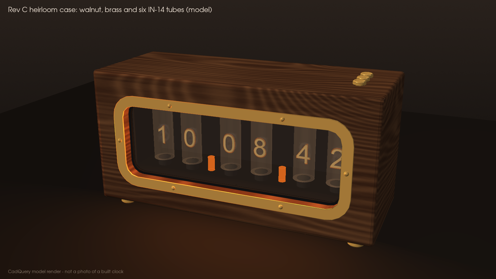
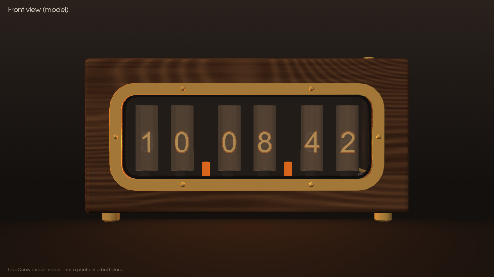
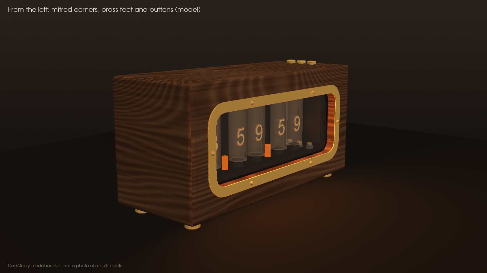
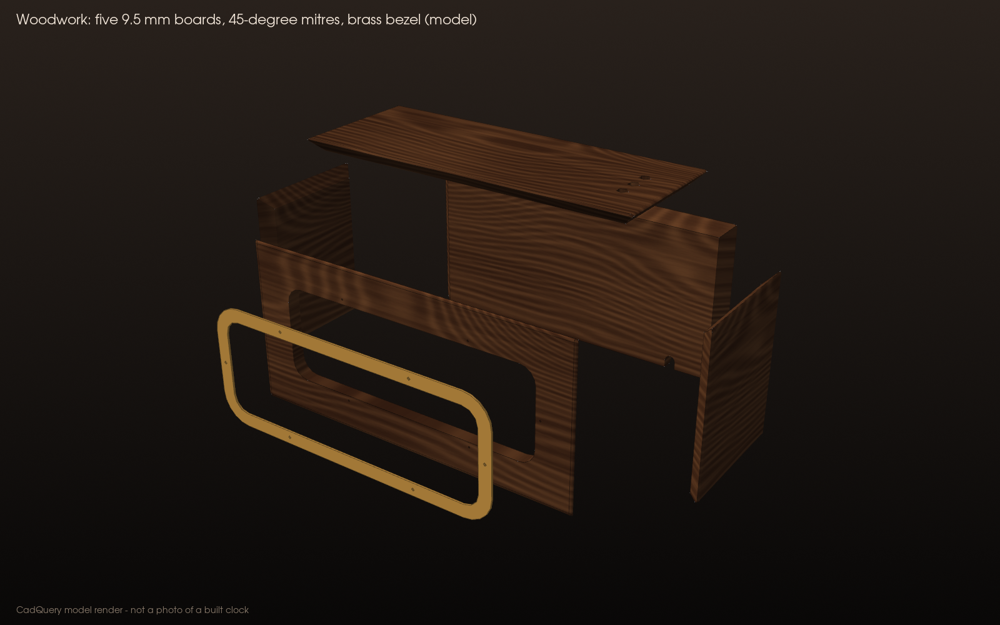
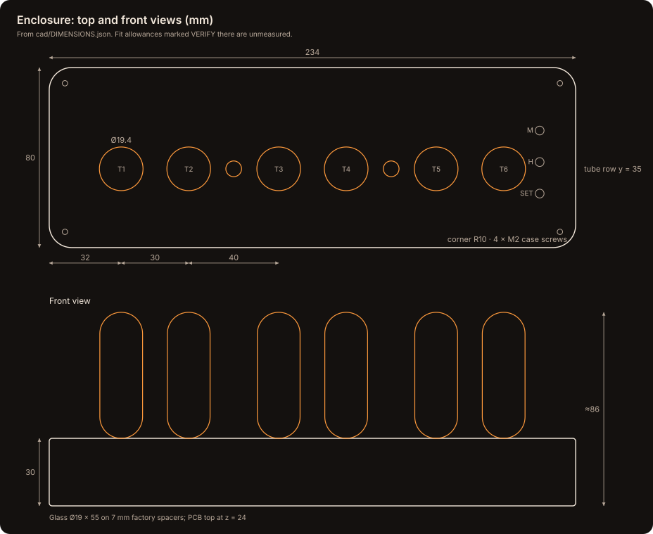
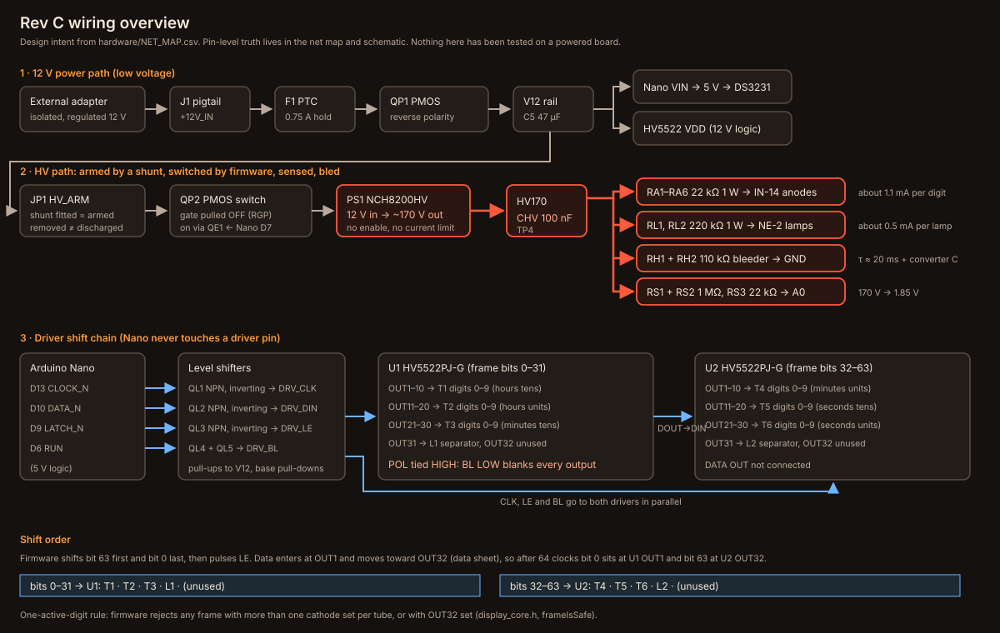
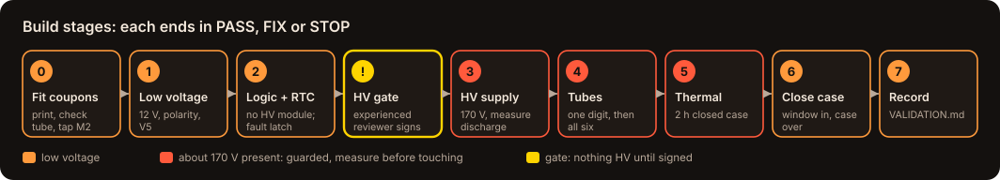

Six-Tube Nixie Clock · Rev C
Caution: About 170 V of direct current (DC) inside: hazardous and potentially lethal. Power only from an external, isolated 12 V adapter (no mains inside). Dark tubes, software "off" or a pulled shunt do not mean safe: measure test pad TP4 below 10 V before touching. Read SAFETY.md first.
An open-source, handmade-style desk clock with six real IN-14 Nixie tubes in a walnut case with brass trim, fully enclosed behind a smoked window, that you can make yourself. It comes with 3D-printable parts, laser-cut and woodworking drawings, a bill of materials (BOM), pin-by-pin wiring, KiCad files, firmware, requirements, labels and a staged build guide, plus a website and a desktop app. The one missing piece is a routed circuit board: the path to it is in MANUFACTURING.md.

| Front | From the side |
|---|---|
 |
 |
Important: Rev C is an unvalidated engineering prototype. Nothing has been powered yet, and the circuit board is not routed, so no Gerber files exist. Recorded file checks pass; every physical check is still open (VALIDATION.md).
At a glance
| 📏 Size | 254 × 100 × 130 mm on its brass feet, about 134 mm to the top of the buttons |
| 🔆 Display | 6 × IN-14 tubes (HH MM SS) + 2 × NE-2 neon separators |
| 🔌 Power | External isolated 12 V adapter, about 0.25 A with all digits lit |
| 🧠 Electronics | Arduino Nano Classic · DS3231 real-time clock (RTC) · 2 × HV5522 tube drivers · NCH8200HV 170 V module |
| 🪵 Case | Five mitred 9.5 mm walnut boards, oiled · 1 mm brass bezel with six brass screws · brass feet and button caps · 3 mm smoked cast-acrylic window |
| 🧱 Inside | A printed black inner case (fits a Bambu Lab P1S) carries every precise fit and keeps the HV enclosed; on its own it is a complete printed edition · M2 screws only |
| 💲 Parts | About $390 for electronics and printed parts, plus roughly $60–100 for wood and brass (planning estimates, not re-priced) |
🏭 Make it

Full process, PCB specification and the release gate: MANUFACTURING.md.
🧊 See it in 3D

How it goes together: glue the five walnut boards into a box and screw the brass bezel on; screw the box onto the printed inner case through its roof; slide the smoked window up into the inner case; screw the PCB with its tubes onto the floor (the chassis); lower the case over it and close it with four screws through the brass feet. No glass ever passes through an opening, and nothing high-voltage can be reached once those four screws are in.
GitHub shows .stl files in an interactive 3D viewer: click one to rotate it.
| View the whole clock (do not print) | Print these | Cut / make these |
|---|---|---|
| Finished clock · Printed edition · Chassis, case off | Black PETG: 01 inner case · 02 floor · 03 clamp · 06 fit coupon · 07 lead coupon · silk brass: 04 button rod ×3 · ready plates in cad/print/ |
Wood boards DXF (walnut, WOODWORK.md) · Brass bezel DXF · Window DXF (3 mm smoked cast acrylic) · brass foot ×4 |

STEP files for computer-aided design (CAD) are in cad/step/; the model of record is source/build_cad.py, driven by cad/DIMENSIONS.json. Printing: PRINTING.md · woodwork and brass: WOODWORK.md.

🧾 Bill of materials
29 electrical lines (71 parts) plus the case (printed, wood, brass, acrylic) and M2 fasteners. Lines marked safety-critical must be bought at the stated rating or better.
| Key part | Qty | Why it matters |
|---|---|---|
| IN-14 Nixie tube | 6 | The display; enclosure is sized for it |
| HV5522PJ-G driver (PLCC-44) | 2 | Switches the tube cathodes (not the PG package) |
| NCH8200HV module | 1 | Makes about 170 V from 12 V |
| Arduino Nano Classic + DS3231SN# | 1 + 1 | Brains and timekeeping |
| 22 kΩ 1 W resistors (Vishay PR01) | 6 | Tube current limit: safety item |
| 100 nF ≥250 V capacitor, 110 kΩ bleeders | 1 + 2 | HV rail storage and discharge: safety items |
Everything, with specs and allowed substitutions: hardware/BOM.csv · hardware/BOM_mechanical.csv · readable BOM.md.
🔌 Circuit and wiring

- Pin by pin: WIRING.md and
hardware/NET_MAP.csv(340 connections; HV5522 pins from the data sheet) - Schematic: PDF · KiCad project in
hardware/ - PCB: mechanical drawing · placement-only board (checked by KiCad's own design rules check, no copper yet)
- Numbers behind the design: EQUATIONS.md (tube current, resistor power, discharge time, RTC drift)

🛠️ Build it

Step by step, with parts, measurements and PASS / FIX / STOP at every stage: BUILD_GUIDE.md. Record each unit in hardware/TEST_RECORD.csv and stick on the labels.
✅ Requirements

42 requirements, each traced to the part of the design that meets it and to how it is verified: REQUIREMENTS.md.
💻 Website, app and tools
| Website | Desktop app | Tools |
|---|---|---|
| This repository as a website on GitHub Pages; installs as an offline web app | Windows, macOS and Linux from the Releases page | Tube and HV calculator, and a USB serial companion for the clock (APP.md) |
🚀 Publish and keep building
- Put this repository on GitHub (website and desktop release included) with one paste: PUBLISH.md
- Everyday commands (check, commit, release, apply a new ZIP): DEVELOP.md
- Supply chain, signed releases, reporting problems: SECURITY.md · data sheets: CREDITS.md
Repository layout
README.md this page
docs/ SAFETY · BUILD_GUIDE · MANUFACTURING · BOM · WIRING · REQUIREMENTS · EQUATIONS
PRINTING · WOODWORK · VALIDATION · APP · PUBLISH · DEVELOP · SECURITY · labels.pdf · schematic PDF
hardware/ KiCad project · NET_MAP.csv · BOM.csv · BOM_mechanical.csv · REQUIREMENTS.csv
COMPONENT_PLACEMENT.csv · TEST_RECORD.csv · REVIEW_SIGNOFF.md · native-check reports
firmware/Nixie_RevC/ Nixie_RevC.ino · display_core.h · build/Nixie_RevC.hex
cad/ DIMENSIONS.json · stl/ · 3mf/ · print/ · step/ · view/ · dxf/ (window, brass bezel, wood boards) · assembly STEP
source/build_cad.py CadQuery model of record
scripts/ generators, checks, publish/ship/release helpers, gated fab-output script
tests/ equation, design, requirement, CAD and firmware checks
site/ · app/ GitHub Pages website · Electron desktop app
sbom/ toolchain software bill of materials
Checks: scripts/run_all_checks.sh reruns every recorded check (equations, design tables, requirements, firmware, AVR compile, CAD geometry, KiCad netlist and placement checks). Passing means the files agree with each other, not that a powered clock works.
License: MIT (LICENSE). Building and powering high-voltage hardware is at your own risk.